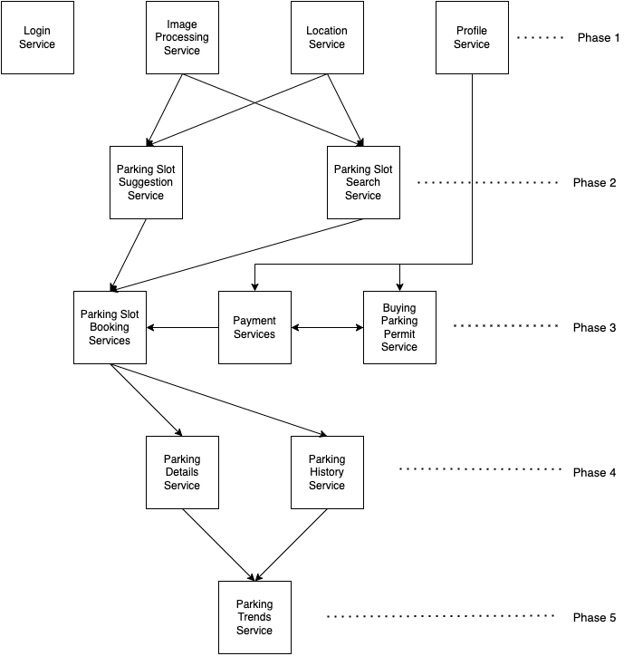

Project Title: Virginia Tech Smart Parking
System
Authors: Raghavi Vannala, Swati Lamba, Yuching Lin, Yuechen Feng
The system to be tested is the VT smart parking system. The system would enable the users to buy various types
of Parking permits offered and then show the user the nearest spot available based on the category of the users
like students and staff and bill the user for the parking.
Since this is black box testing, we have based our testing plan on the functionalities and project
requirements.
The scope of this test plan will cover all of the functional requirements and some of the non-functional requirements as listed below.
It is assumed that the application is responsive with the load time of maximum 5 seconds and response time of maximum 3 seconds. This ensures the users do not have to wait too long and lose interest. The scalability testing is also included which will test application to accommodate maximum (50,000 approx) requests made by the VT students and staff.
This test plan will focus on ensuring the system as a whole as well as the individual components function as defined by the requirements. As such, some of the specific details of how the components operate internally will not be tested. The following requirements are not specifically targeted by this test plan. Depending on how the tests are implemented and configured it is possible one or more of these requirements will be covered in this plan. We will also not be covering the recovery and durability testing ruling out considering the NFR-3 and NFR-4.
The test plan has been divided into six phases. Each phase has main objective of testing the functionalities of the system. The phases have been designed in an incremental fashion. The first phase has all the independent functionalities covered which will be used and integrated with the functionalities that will be tested in upcoming phases. The first five phases cover the functional testing and integration testing of the application. The last phase is for the load and performance testing.
The objective of the testing is to test and evaluate the functionality of the application in an incremental
fashion. The division of the phases for the testing we have chosen is based on the logical progression of the
functionality development as it would be blackbox testing. So that the testing can start as soon as a
functionality is completed and all the independent functionalities as well as the basic functionalities on which
the other functionalities are built upon should be completed first. For example, the Parking Trends Service is
in phase 5 because it depends on Parking booking services, location services and parking history services. This
helps make the testing easy to consider all the necessary cases at once.
Below is Table 1.1 depicting all the phases with respective requirements and dependencies.
| FR No | Features | Phase | Dependencies |
|---|---|---|---|
| FR 1 | Login Services | Phase 1 | |
| FR 4 | Image Processing | Phase 1 | |
| FR 2 | Location Services | Phase 1 | |
| FR 8 | Profile Service | Phase 1 | |
| FR 3 | Parking slot suggestion service | Phase 2 | Dependent on image processing and location service |
| FR 5 | Parking slot search service | Phase 2 | Dependent on image processing and location service |
| FR 6 | Parking Slot Booking Services | Phase 3 | Dependent on parking slot search service |
| FR 6 | Payment Services (using parking permit) | Phase 3 | Dependent on slot booking services |
| FR 7 | Buying parking permit service | Phase 3 | Dependent on payment service |
| FR 9 | Parking details Service | Phase 4 | Dependent on payment and booking services |
| NFR 5 | Parking history service | Phase 4 | Dependent on payment and booking services |
| FR 10 | Parking trends service | Phase 5 | Dependent on Parking history service |
| Performance testing | Phase 6 | Dependent on the full application functional testing completion |
Table 1.1 Test Plan of the VT Parking System.
Fig 1 depicts the phases of the testing and the services and their dependencies. It also implies the integration between the services of the application.
Fig 1. Phases of testing and Service Dependencies
The build for this phase consists of independent functionalities of the application and they are FR1, FR2, FR4, FR8 and NFR1.
Testing basic independent functions.
| Test | Goal | Procedure |
| 6.1 | If a new user, has the option to register | Open the application on an android and iOS device, there should be a “register” option which should open a registration page. |
| 6.2 | If new user, should register successfully | On the registration page, the user should enter the VT PID and set a password and logout and be redirected to the login screen. |
| 6.3 | The existing user should have the option to login | Open the application on an android and iOS device, there should be a signin option with VT PID and password fields. |
| 6.4 | An existing user, should be able to login successfully with valid password | Enter the VT PID and password in the login screen and click on the sign in button, the user should be redirected to the home screen. |
| 6.5 | A logged-in user should have the option to logout successfully | When logged in, after clicking on the Logout button, the user should be able to Logout and redirect to the login screen. |
| Test | Goal | Procedure |
|---|---|---|
| 6.1 | A logged-in user should be able to view the profile details | Login to the application, the user should be able to go to the profile page from the home page and be able to see all the profile details except the password. |
| 6.2 | A logged-in user should be able to edit and save profile details | Login to the application, the user should be able to go to the profile page from the home page and be able to see all the profile details and have the option to update it excerpt the username i.e. VT PID. |
| Test | Goal | Procedure |
|---|---|---|
| 1.1 | Sensor data received/captured | Add sensor(s) to the system. Verify that sensors are outputting data. |
| 1.2 | Data processed into standard format. | Feed the Sensor Data Processor captured data from connected devices. Validate that it is actively converting data to the standardized format. |
| 1.3 | Erroneous data removed | Feed processed data into the Sensor Data Noise Reducer. Modify the data to include erroneous or null data points. Verify that the invalid data has been removed. |
| 1.4 | Cleaned data stored in a local database and sent to the web server and processed. | Run data through Sensor Data Noise Reducer. Verify that this triggers the Persistence Module to store the data in the local relational database and POST data to the server and processed. |
| Test | Goal | Procedure |
|---|---|---|
| 1.1 | The application should be able to take the user's live location. | Login to the application, if not already accepted, the user should see a pop up to accept to enable GPS and use it by the application for the other services. |
An important component of the Image processing module is its ability to process data from external sensors. It may prove useful to either mock third-party sensor data or provide a tool that can generate data based on specs from multiple third-party image sensors and GPS location services. Also, an emulator for Android (version 7 and above) and iOS(version 10 and above) would be required to test the functionality on the mobile application.
The build for this phase consists of independent functionalities of the application and they are FR3, FR5 and NFR1.
Parking slot services testing.
| Test | Goal | Procedure |
|---|---|---|
| 2.1 | Users should be able to see the available parking slots representation on maps | System should get the list of available slots from the database and represent it on the map. |
| 2.2 | System should be able to suggest available parking slots within 1 mile radius of the location and availability of the slots at present | System should get the list of available slots within 1 mile radius of the given location from the database and represent it on the map. |
| Test | Goal | Procedure -Raghavi |
|---|---|---|
| 2.1 | Users should be able to locate themselves. | System should get the current location from location services and represent it on the map. |
| 2.2 | Users should be able to enter the location name to search | There should be a text field in the map to enter the location. |
| 2.3 | Users should be able to add a criteria of time slot to search the parking slot. | There should be a field adjust the time for which the user is looking for the slot booking |
| 2.4 | Users should be able to find the parking slots location represented on the map | The system should be able to get a list of parking slot locations within 1 mile radius of the searched location. |
An essential component of the Parking slot service module is its ability to show the locations on the graphical view or map view. Third-party services like Gmaps or apple maps can be used to show these locations. This module will also need to mock the location data that in the practical scenario is generated by the mobile hardware. Also, an emulator for Android (version 7 and above) and iOS(version 10 and above) would be required to test the functionality on the mobile application.
The build for this phase consists of independent functionalities of the application and they are FR6, FR7 and NFR1.
To book and pay for the parking spot by using parking permits.
| Test | Goal | Procedure |
|---|---|---|
| 3.1 | Users can view parking spaces that are available for a particular booking period. | By providing their specific booking time slots and parking lot, users could view the available parking slot according to the results of the Parking slot search service tested in Phase 2. |
| 3.2 | Users should set information for submitting a reservation order. | Including choosing a preferred parking slot and input the license plate number to ensure that one parking space in a period of time is only used by one user car. |
| 3.3 | Users should be able to view/check booking orders. | Users are able to view their submitted history and future orders. |
| 3.4 | Users should be able to cancel booking orders. | Users are able to cancel the order if they no longer require the parking service. |
| 3.5 | Release booked parking slot if user does not check-in after 20 mins from book start time. | If the user does not check-in within 20 minutes of the scheduled start time, the system should release the reserved parking space for other users to book in order to maximize benefit. |
| 3.6 | Update booking check-in and check-out | System should be able to update each user’s check-in and check-out through sensors and orders to track the parking lot occupancy. |
| Test | Goal | Procedure |
|---|---|---|
| 3.1 | Payment detail and parking fee should be show on the booking page | System should calculate the total order fee for the user. Booking page should list the payment details including the booking hours, order total fee, license plate number, packing lot name etc order details in the booking page for the user to review and check. |
| 3.2 | Users are able to pay the parking fee using parking permits | Users need to pay their parking fee by using parking permits. Parking permit should have enough deposit money in it. |
| 3.3 | Refund fee if user do not check-in | If the user does not check-in but already pays the parking fee, the system should refund the fee back to the user directly. |
| 3.4 | Guide back to parking permit service.Page if deposit money is not enough. | If the remaining deposit money in the parking permit is less than the current parking fee, system should show message to remind user and guide user to parking permit service page. |
| 3.5 | Guide back to parking permit service.Page if user do not have a parking permit | If the user do not have a parking permit yet, system should show message to remind user and guide user to parking permit service page. |
| Test | Goal | Procedure |
|---|---|---|
| 3.1 | A logged-in user should be able to buy a parking permit | One user is assumed to have one parking permit to book a parking slot. If the user does not have one, they should buy one on the parking permit service page. |
| 3.2 | Users can deposit money in parking permit | If a user has a parking permit, they can deposit money in it by debit card or credit card. |
| 3.3 | Validate the debit card or credit card when buying a parking permit and deposit money. | Verify payment success or failure. |
In this module, the tests are relying on mocking the data that originally is received from the payment gateway like success, failure, or timeout conditions. Also, an emulator for Android (version 7 and above) and iOS(version 10 and above) would be required to test the functionality on the mobile application.
The build for this phase consists of independent functionalities of the application and they are FR9, NFR1 and NFR5.
To get one’s parking details and past parking history.
| Test | Goal | Procedure |
|---|---|---|
| 4.1 | Users can find their booking time, slot location, booking role, and other booking details | The parking detail should show enough parking details on page |
| 4.2 | User can delete or archive the parking detail | There should be a button for the user to remove or archive the current detail data |
| Test | Goal | Procedure |
|---|---|---|
| 4.1 | Users can search the history parking details based on different keywords | There should be a search bar for users. Users can input the search bar and press the search button. |
| 4.2 | Users can remove their history by single or deleting all | There should be buttons for removing a single history record or deleting all. Users could press that button to update the data. |
| 4.3 | User can browse their history records | There should be a list for the user to browse after searching by scrolling up and down. |
Additional Software
An emulator for Android (version 7 and above) and iOS(version 10 and above) would be required to test the functionality on the mobile application.
The build for this phase consists of independent functionalities of the application and they are FR10 and NFR1.
To get the parking slot trends to check for the free slots based on the parking history.
| Test | Goal | Procedure |
|---|---|---|
| 5.1 | System could display the number of days’ parking trends | After logging into the application and going to the home page, users could see the parking trends on the graph. |
| 5.2 | Users could select the number of days to see the parking trends | Users could select the drop-down button and choose the number of days to check different parking trend graph |
An emulator for Android (version 7 and above) and iOS(version 10 and above) would be required to test the functionality on the mobile application.
To check if the application has load time of maximum 5 seconds and response time of maximum 3 seconds. The scalability testing is also included which will test application to accommodate maximum (50,000 approx) requests made by the VT students and staff.
| Test | Goal | Procedure |
|---|---|---|
| 6.1 | Login Page | Check the response time for getting to the login page with multiple load hits to check the performance. |
| 6.2 | Home Page | Check the response time for getting to the home page with multiple load hits to check the performance after login. |
| 6.3 | Image Processing | |
| 6.4 | Profile Page | Check the response time for getting from the home page to the profile page with multiple load hits to check the performance. Check the response time for getting the response message after the update profile button is clicked. |
| 6.5 | Parking Slot Booking Services | Check the response time and ensure the correctness when multiple user booking the parking slot at the same time |
| 6.6 | Payment Services (using parking permit) | Check the response time when payment services have high user loads. |
| 6.7 | Buying parking permit service | Check the response time for validating the payment success or failure. |
| 6.8 | Parking Detail Page | Check the loading time of parking details pages when there exists high user loads |
| 6.9 | Parking History Page | Check the loading time when the history record is initialized. Check the response time when doing the search function with high user loads |
| 6.10 | Parking Trend Page | Check the loading time when the parking trend graph is initialized. Check the response time when selecting different number of days with high user loads |
| 6.11 | Registration Page | Check the response time when doing the registration activity with high user loads |
An emulator for Android (version 7 and above) and iOS(version 10 and above), performance measuring tools such as JMeter, and automation scripts would be required to do the performance testing.
Once all the test phases are completed successfully, the final product needs to verified and validated against the original requirements mentioned. For that, we have created the below 56 test cases which can be used to complete the validation testing. With the help of Traceability Matrix Table 1.2, we can ensure the final product meets all the customer requirements.
| Test Case Number | Requirement ID |
|---|---|
| 1-16 | FR1, NFR1 |
| 17-20 | FR2, NFR1 |
| 21-28 | FR8, NFR1 |
| 29-32 | FR4, NFR1 |
| 33-42 | FR6, NFR1 |
| 43-46 | FR7, NFR1 |
| 47-48 | FR9, NFR1 |
| 49-50 | NFR5, NFR1 |
| 51-52 | FR10, NFR1 |
| 53-54 | FR3, NFR1 |
| 55-56 | FR5, NFR1 |
Table 1.2 Traceability Matrix depicting the test case coverage across the requirements
It is important to recognize that it is impossible to cover every possible testing scenario. The strategy outlined in this plan focuses on the functional, integration and performance testing of the VT Parking System. The test plan should evolve as the design of the system evolves and requirements are refined. This test plan provides a solid foundation to begin implementing testing strategies that will contribute to better software quality.